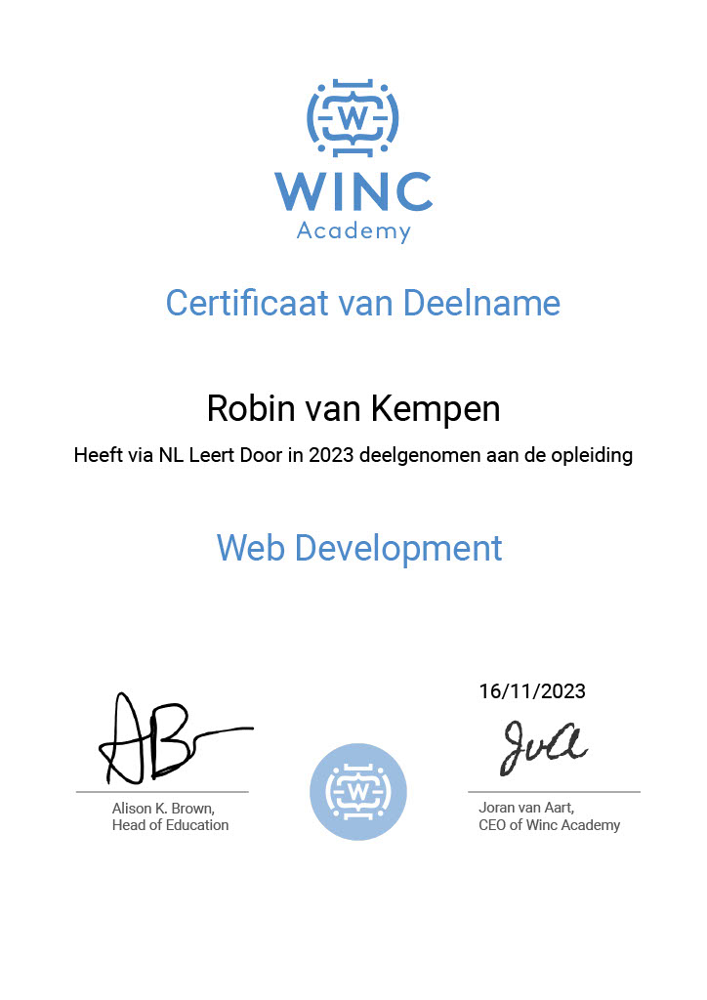
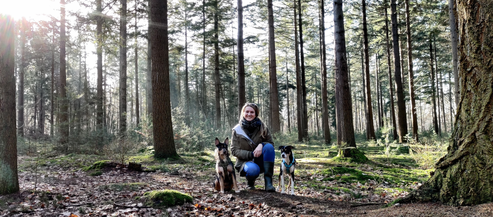

"Welkom bij mijn GitHub-repository! Hier vind je informatie over mij en mijn projecten. Ik ben bezig met het ontwikkelen van mijn vaardigheden in softwareontwikkeling en deel graag mijn creaties met jou. Neem een kijkje en ontdek wat ik heb gemaakt!"
Ambitie
Momenteel ben ik bezig met het verkennen van verschillende aspecten binnen de IT. Software Development en Digital Design (UI en UX design) zijn twee richtigen die goed aansluiten bij mijn kwaliteiten. Daarnaast spreekt Information & Cyber Security mij erg aan, omdat ik graag veel verantwoordelijkheid draag. Ik hou van spanning en uitdaging, waardoor ik deze richting ook graag zou willen proberen.
Ik heb ervaring opgedaan met verschillende programmeertalen, zoals JavaScript, HTML, CSS, PHP en MySQL. JavaScript is tot nu toe mijn favoriet en daar ligt op dit moment mijn focus op. Ik leer nu te werken met Canvas, zodat ik tijdens mijn volgende project een virtuele wereld met zelfrijdende auto's kan gaan maken. Hierbij ligt de focus op onder andere neural networks en hiermee leer ik Artificial Intelligence begrijpen. Dit project wil ik met React gaan bouwen en ik wil mij daarna in Node.js gaan verdiepen.
Door te oefenen met IT aspecten die mij aanspreken, hoop ik gaandeweg mijn niche te vinden. Op die manier kan ik doen wat ik het allerleukst vind en waar mijn kwaliteiten het beste tot hun recht komen. Omdat ik goed ben in het bedenken van creatieve oplossingen, vind ik coderen en vooral bugs opsporen en fixen verslavend leuk.
In mijn vrije tijd geniet ik van grafisch ontwerpen, tekenen en andere creatieve bezigheden zoals DIY projecten. Daarnaast spendeer ik graag tijd in de natuur om op te laden en nieuwe inspiratie op te doen. Wil je meer over mij persoonlijk weten?
Portfolio
"Welkom op mijn portfolio! Hier vind je een verzameling van projecten en opdrachten die ik heb gemaakt.
Cursus Web Development

Ik begon met een cursus Web Development bij Wink Academy, waardoor ik ontdekte hoe leuk coderen is. Ik leerde te werken met JavaScript in de console en maakte mijn eerste project. De opdracht was het ontwerpen van een dating website met HTML en CSS.
Scoresyteem
Daarna kreeg ik de opdracht om een systeem voor motocrosstrainers te maken. Met veel enthausiasme, geduld en YouTube tutorials heb ik "from scratch" een programma gemaakt en gestyled dat ook daadwerkelijk gebruikt wordt. Ik ben hier best trots op. Tijdens het maken hiervan leerde ik vooral Object Oriënted PHP en mySQL, het programma is dus gekoppeld aan een database. Het doel ervan is dat trainers van motorcrossers hun leerlingen eerlijker kunnen beoordelen. Voorheen deden ze dat in een Excel bestand, maar nu kunnen ze dat in mijn programma doen dat aan hun website is gekoppeld. Het staat in een beveiligde omgeving, dus ik kan het helaas niet live laten zien, maar wel in een schermopname video. De code is voornamelijk OOP PHP en MySQL en daarom vergelijkbaar met die van mijn cv en ik plaats deze niet op GitHub. Maar als je het echt graag wilt zien, kun je mij natuurlijk een bericht sturen.
App
Daarnaast had ik voor iemand anders een app ontwikkeld, maar deze is niet meer online omdat de makers van de app ontwikkeltool ermee zijn gestopt. Desondanks kan ik wat screenshots tonen om te laten zien hoe het eruit zag. De app was voor een winkel (toevallig alweer voor de motorsport) en klanten gebruikte het om o.a. producten te bestellen en naar het bedrijf te bellen en navigeren. Voornamelijk gebruikte ze het voor de online stempelkaart waar ze korting mee konden sparen voor producten.
Snake Game
Ik heb ook een tijdje samengewerkt met iemand die mij veel heeft geleerd over hosting, SEO, Wordpress en FileZilla. Echter vond ik no-code en low-code niet zo leuk als het werken met programmeertalen, dus ik focus mij nu vooral daarop. Ik oefen graag met FreeCodeCamp, Codeacademy, Coursea en mijn favoriet: YoutTube tutorials. Daarmee heb ik bijvoorbeeld deze snake game gemaakt.
Canvas
Momenteel ben ik bezig met canvas in JavaScript, zodat ik daarmee een project kan maken waarin ik leer over hoe Artificial Intelligence werkt met onder andere neural networks. Dat project ga ik maken met React en daarna ga ik mij in Node.js verdiepen.
cv
Als je deze nog niet had gezien is hier tenslotte mijn cv. Dit was een leuke oefening om PHP en mySQL weer even te herhalen. Deze wordt gratis gehost op InfinityFree.com zodat hij vanaf elk device online te bekijken en door mij aan te passen is.
Over mij

Hoi! Ik ben Robin en ik woon in het prachtige Groesbeek met mijn vriend Roland en onze hondjes Boño en Theo. Ik wandel vaak met hen op plekken waar je de natuur kunt bewonderen, zoals in de bossen of op het strand. In de lente en zomer inventariseer ik vlinders en hommels als vrijwilliger voor de Vlinderstichting.
Als ik thuis niet achter mijn laptop zit, doe ik meestal iets creatiefs of ben ik met mijn tuintje of kamerplanten in de weer. Tenzij mijn honden mij aan het entertainen zijn, want daar zijn ze heel goed in. 's Avonds genieten Roland en ik meestal van een horror film of games in virtual reality. Wil je weten wat ik eigenlijk achter mijn laptop doe?

({-RD-.png)